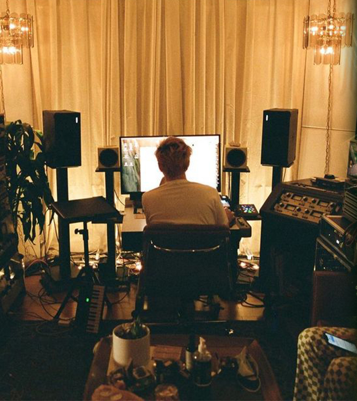

← 02
→
Music production
remote mixing & mastering
A melody, a chord, or a rough demo — whatever the starting point, it becomes a complete, release-ready track, with every step of production handled in one place.



production classes,
good vibes & no judgement
I am convinced that the process of creating music is one of the most amazing and addictive things in life. It is a process of meditation, self-discovery and total immersion into the amazing world of sound that you are building.